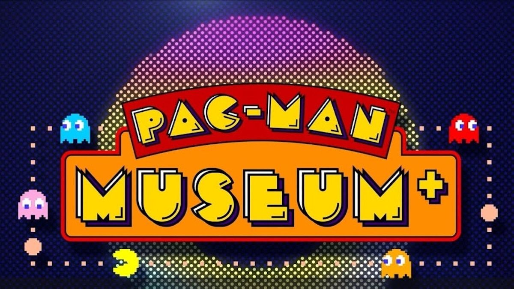

NOTICIAS DEL DIA:

Pokémon Scarlet y Violet llegan a fin de año
The Pokémon Company anunció los nuevos juegos de la serie principal que llegarán este año a Nintendo Switch.

Pac-Man Museum+ sale en mayo y debuta en Game Pass
Pac-Man vuelve con una colección que incluye más de una docena de lanzamientos de la franquicia hasta el momento.

The Last of Us 2: las armaduras ocultas de Ellie
Un youtuber descubrió una serie de armaduras en The Last of Us 2 que podrían usarse para el modo multijugador separado.

Gabe Newell estaría feliz de tener Game Pass en Steam
Al respecto del lanzamiento de Steam Deck, Gabe Newell habló de la posibilidad de llevar Game Pass a Steam.

Bandai Namco pide disculpas por los problemas de Elden Ring
Elden Ring, el último juego de From Software, resultó una maravilla, pero los usuarios de PC se encontraron con una serie de problemas.

5 cosas que no sabías de Horizon Forbidden West
Te traemos 5 datos fundamentales para empezar a jugar Horizon Forbidden West y disfrutar como nunca de esta gran aventura